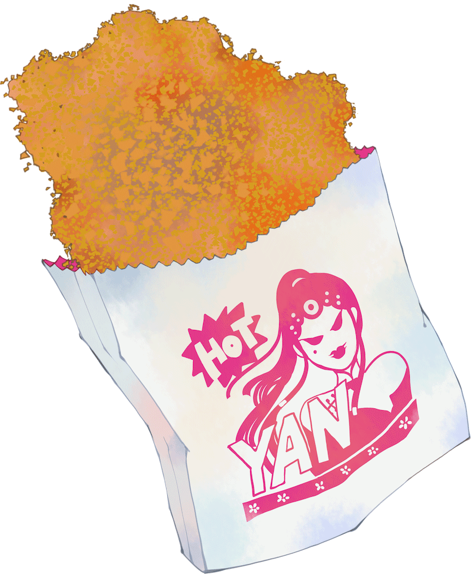
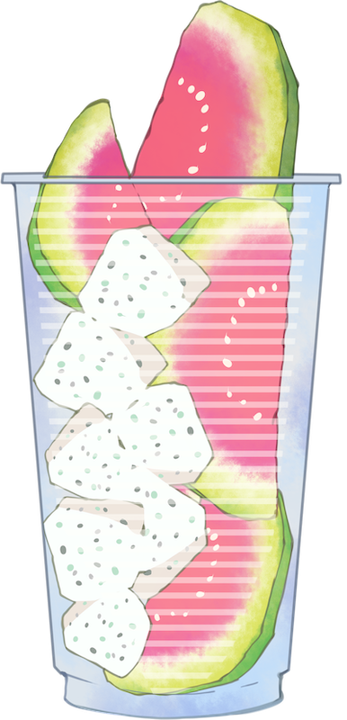

Nasce a Taipei nel 1968. Lavora in un'agenzia pubblicitaria per 15 anni e nel 2002 inizia a creare fumetti.
Tra i suoi manga ci sono: Dream Hotel, BABY., OLDMAN, The Hidden Level, Nine Lives Man: Time’s Wheel, ed altri ancora; ha partecipato al progetto dei Fumetti del Louvre, creando la compilation intitolata Sept rêves du Louvre. I diritti d’autore d'oltremare delle opere includono le versioni in giapponese, francese, coreano, inglese e italiano.
Premi:



Un programma trasmette in diretta un omicidio: un attore di opera tradizionale che ricopre un ruolo femminile è ripreso dalla telecamera mentre canticchia un’aria di La leggenda del serpente bianco, si volta e spara al figlio di un membro del Congresso legato ad una sedia.Â
Yan Tieh-hua era l'unica sopravvissuta della famiglia Yan all’omicidio della Compagnia dell'Opera di Pechino avvenuto 30 anni fa. Quando aveva solo 15 anni, è diventata un'assassina finendo in prigione, dove è morta 10 anni fa. Ma allora chi è la persona che adesso si fa chiamare Yan Tieh-hua e che ha lo stesso aspetto della ragazzina di 30 anni fa?
Quale cospirazione si nasconde dietro l’omicidio originale?
Chi si nasconde dietro le quinte?
Il caos si sta per scatenare per le strade di Taipei, ma la verità emergerà dalla nebbia?
＊Diritti d’autore italiani venduti (Edizioni IF)
＊I diritti di film e album sono stati venduti


{kind=link}